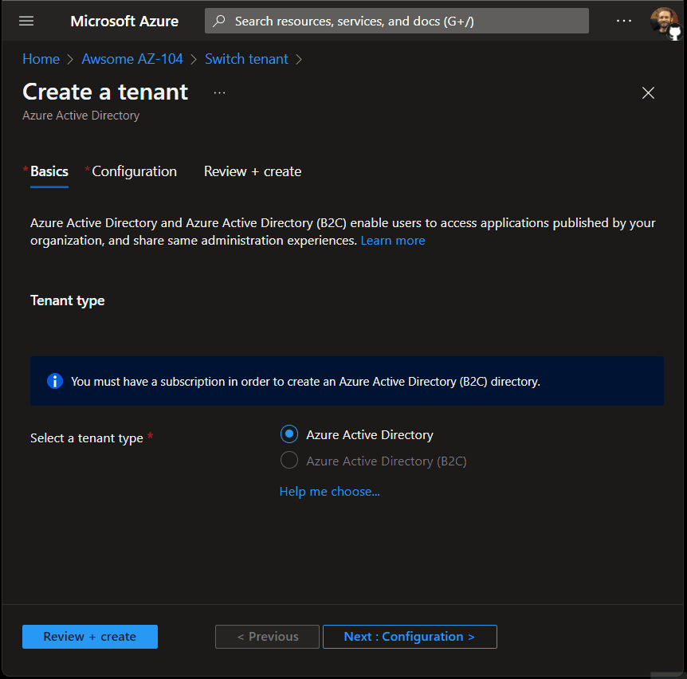
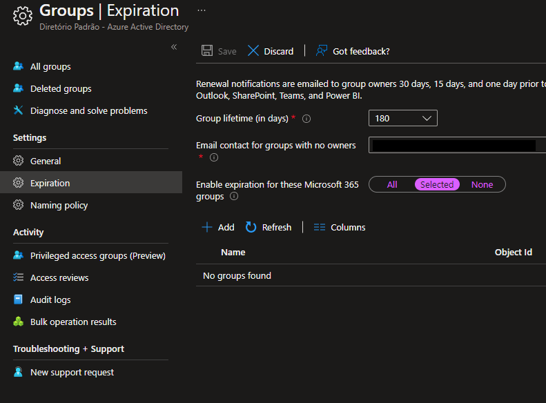
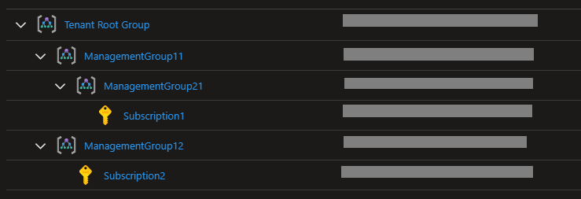

Introduction
A comprehensive collection of statements, references, tips and functional demos covering the various topics required for AZ-140 Microsoft Azure Administrator certification exam.
Search by typing S on your keyboard, or use search icon (🔍) at the top.


Active Directory
New Tenant User Management
Existing AAD admins (Global Administrators, User Administrators, Owners) of an existing Tenant A must be added to a newly created Tenant B before they’re able to manage users of that new Tenant B. The only user which will have instant management permissions is the administrator that created the new Tenant B.
Reference: Add Users to Active Directory
As we can see in this example, none of the existing users of Tenant A are added to the new Tenant B upon it’s creation, with the exception of the Tenant B creator.

Groups with automatic deletion
Requires Azure AD Premium
As demonstrated in the documentation, only Microsoft 365 groups can be associated for the expiration policy.
As stated in the tool tip:
Expiration will only be applied to Microsoft 365 groups
You can try out in this demo with various groups created.

Access Review
Following the Prerequisites for the creating access reviews:
Prerequisites:
- Azure AD Premium P2.
- Global administrator, User administrator, or Identity Governance administrator to create reviews on groups or applications.
- Global administrators and Privileged Role administrators can create reviews on role-assignable groups. For more information, see Use Azure AD groups to manage role assignments.
- (Preview) Microsoft 365 and Security group owner.
Needless to say, Guest accounts are not allowed to perform access reviews.
Use the demo to test every scenario.
Kubernetes Services (AKS)
Grant access to AKS
As documented in Kubernetes Authentication Strategies:
Kubernetes uses client certificates, bearer tokens, or an authenticating proxy to authenticate API requests through authentication plugins.
And, as per Microsoft Access and Identity docs:
You can authenticate, authorize, secure, and control access to Kubernetes clusters in a variety of ways.
- Using Kubernetes role-based access control (Kubernetes RBAC), you can grant users, groups, and service accounts access to only the > resources they need.
- With Azure Kubernetes Service (AKS), you can further enhance the security and permissions structure via Azure Active Directory and > Azure RBAC.
As we can see there are many options to grant access in AKS. Let’s look into some examples below.
Demo
For a hands-on experience, run the demo to create your environment and test these scenarios.
RBAC
You can manage access using AKS RBAC. This feature needs Managed AAD to be enabled in the AKS, along with enabling the RBAC feature itself.
az aks create -g 'MyResourceGroup' -n 'MyManagedCluster' --enable-aad --enable-azure-rbac
This has the advantage of granular permissions, such as applying different permissions to specific namespaces.
There are also some limitations to this approach, make sure to check the documentation.
AAD Application Registration
Another form of authorization in Kubernetes is by creating an Application Registration on AAD and assigning permissions to that application to the AKS resource via IAM.
Although this works in practice, it is far less recommended to provide this tot end-users, and an RBAC approach would be much appropriate.
Snippet from the docs:
kubectl config set-credentials USER_NAME \
--auth-provider=oidc \
--auth-provider-arg=idp-issuer-url=( issuer url ) \
--auth-provider-arg=client-id=( your client id ) \
--auth-provider-arg=client-secret=( your client secret ) \
--auth-provider-arg=refresh-token=( your refresh token ) \
--auth-provider-arg=idp-certificate-authority=( path to your ca certificate ) \
--auth-provider-arg=id-token=( your id_token )
OIDC
Azure Kubernetes Services also can act as a OIDC issuer, which at the time of this writing is in Preview.
To see that running alongside Azure Workload Identity, checkout my other repository.
Load Balancer
Load Balancer Least Privilege Permissions
For an administrator to be able to create Backend Pools on ELBs and Health Probes on ILBs the minimum permission that they’ll need is Network Contributor on those resources AND in the Virtual Network.
The reason being that a change on the subnet is also required, as demonstrated in the following exception.
Message: The client 'Admin1@yourdomain.onmicrosoft.com' with object id '00000' has permission to perform action 'Microsoft.Network/loadBalancers/write' on scope '/subscriptions/00000/resourceGroups/rg-awsomeaz104-loadbalancer-permissions-demo/providers/Microsoft.Network/loadBalancers/lbi-awsomeaz104-loadbalancer-permissions-demo'; however, it does not have permission to perform action 'Microsoft.Network/virtualNetworks/subnets/join/action' on the linked scope(s) '/subscriptions/00000/resourceGroups/rg-awsomeaz104-loadbalancer-permissions-demo/providers/Microsoft.Network/virtualNetworks/vnet-awsomeaz104-loadbalancer-permissions-demo/subnets/LBI-Subnet' or the linked scope(s) are invalid.
In the experiment the following output was reproduced, this of course given that the Virtual Network resides on the same Resource Group.
| Target | Assignment | Scope | Action | Result | Least Privilege |
|---|---|---|---|---|---|
| ELB | Contributor | External Load Balancer | Add Backend Pool | ❌ | ❌ |
| ELB | Network Contributor | External Load Balancer | Add Backend Pool | ❌ | ❌ |
| ELB | Network Contributor | Resource Group | Add Backend Pool | ✅ | ✅ |
| ELB | Owner | External Load Balancer | Add Backend Pool | ❌ | ❌ |
| ILB | Contributor | Internal Load Balancer | Add Health Probe | ❌ | ❌ |
| ILB | Network Contributor | Internal Load Balancer | Add Health Probe | ❌ | ❌ |
| ILB | Network Contributor | Resource Group | Add Health Probe | ✅ | ✅ |
| ILB | Owner | Internal Load Balancer | Add Health Probe | ❌ | ❌ |
Management Groups
Management Groups Permissions
For hands-on on these topics run the demo.
Policy Inheritance
Policies applied to Management Groups and inherited by Subscriptions.
Let’s consider the following configuration:

And the following policies applied:
| Policy | Resource | Applied To |
|---|---|---|
| Not Allowed Resources Types | Virtual Networks | Tenant Root Group |
| Allowed Resources Types | Virtual Networks | ManagementGroup12 |
These operations are not allowed:
- Create a Virtual Network in Subscription1
- Create a Virtual Machine in Subscription2
Adding Subscriptions
It is not possible to add subscription to more than one management group.
For example, giving the same scenario above, this command would fail:
az account management-group subscription add -n '<management-group-11>' -s 'Subscription1'